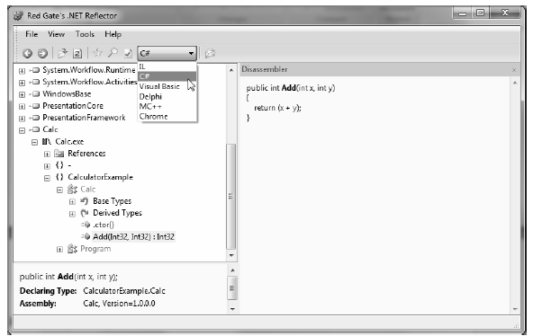

While using ildasm.exe is a very common task when you wish to dig into the guts of a .NET assembly, the one gotcha is that you are only able to view the underlying CIL code, rather than looking at an assembly’s implementation using your managed language of choice. Thankfully, many .NET object browsers and decompilers are available for download, including the very popular Reflector.
This free tool can be downloaded from http://www.red-gate.com/products/reflector. Once you have unzipped the archive, you are able to run the tool and plug in any assembly you wish using the File | Open menu option. Figure 1-11 shows our Calc.exe application once again.
Figure 1-11. Reflector is a very popular object browsing tool
Notice that reflector.exe supports a Disassembler window (opened by pressing the space bar) as well as a drop-down list box that allows you to view the underlying code base in your language of choice (including, of course, CIL code). I’ll leave it up to you to check out the number of intriguing features found within this tool.
Note Be aware that over the course of the remainder of the book, I’ll make use of both ildasm.exe as well as reflector.exe to illustrate various concepts. So take a moment to download Reflector if you have not already done so.